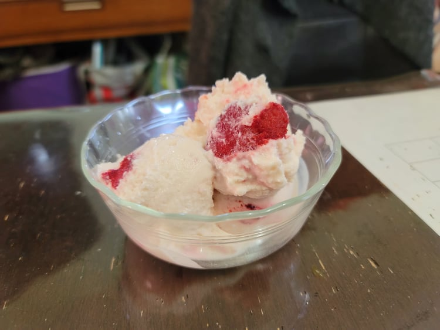

Frozen Yogurt

Ingredients:
- 32 oz Plain Greek yogurt, or any plain yogurt
- 1/3 cup Honey
- Optional: 1 tsp Vanilla, or any other flavoring
- Optional: 1/2 Frozen mixed berries, or any other add-in
Instructions:
- In a large bowl, mix together the ingredients until well combined.
- Pour the yogurt into a turned on ice cream maker. Let churn until soft serve consistency, about 20-40 minutes. Then transfer to a sealable container and freeze overnight or until firm.